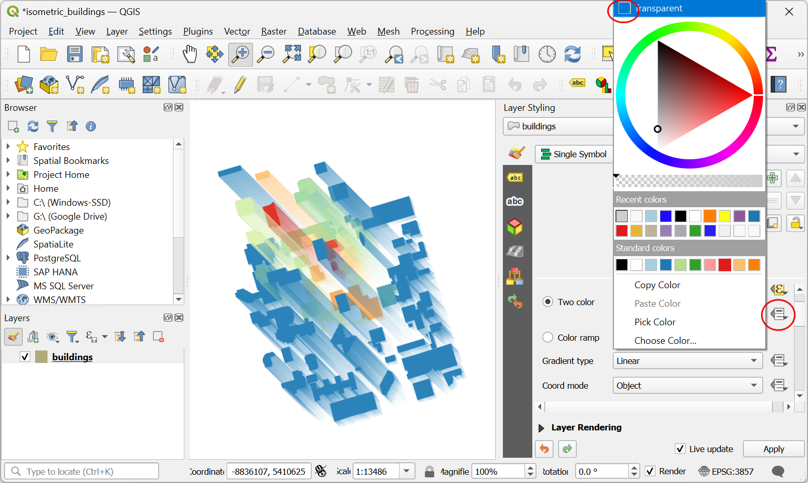

Ejecutar Algoritmos de Procesamiento vía Python (QGIS3)¶
La Caja de Herramientas Procesos en QGIS contiene una colección siempre creciente de herramientas de geoprocesamiento. La caja de herramientas provee un interfaz sencillo de procesamiento por lotes que ejecuta cualquier algoritmo en un gran número de entradas. Vea Procesamiento por Lotes usando el Marco de Procesamiento (QGIS3). Pero hay casos donde necesita incorporar un poco más de lógica personalizada en su procesamiento por lotes. Como todos los algoritmos de procesamiento pueden ser ejecutados programáticamente vía la API Python, usted puede ejecutarlos vía la Consola de Python. Este tutorial muestra cómo ejecutar una algoritmo de procesamiento vía la Consola de Python para realizar una tarea de geoprocesamiento personalizada en solo una pocas líneas de código. Por favor revise el tutorial Iniciándote con la Programación Python (QGIS3) para familiarizarse con lo básico del ambiente de Script Python en QGIS.
Vista general de la Tarea¶
Usaremos 12 capas ráster grid que representan la precipitación para cada mes del año y calcularemos la precipitación mensual promedio para todos los códigos zip en el área de Seattle.
Otras habilidades que aprenderá¶
Acceder a todas las capas (ráster y vectorial) desde la consola de Python e imprimir sus nombres.
Fusionar diferentes capas en una sola capa usando script Python.
Obtener los datos¶
El Grupo de Clima PRISM reune observación del clima y provee datos históricos y actuales del clima para los estados contiguos de EE.UU. Diríjase a la página de datos Años Recientes y descargue los datos mensuales de precipitación para el año 2017 en formato BIL.
El portal de Datos Abiertos de la Ciudad de Seattle provee datos libres y abiertos para la ciudad. Busque y descargue los datos de Códigos Zip en formato de archivo shape.
Para su comodidad, puede descargar directamente una copia de ambos conjuntos de datos desde los enlaces abajo:
PRISM_ppt_stable_4kmM3_2017_all_bil.zip
Fuente de Datos [PRISM] [CITYOFSEATTLE]
Procedimiento¶
Localice la carpeta
PRISM_ppt_stable_4kmM3_2017_all_bil.zipen el Explorador QGIS y expándala. La carpeta contiene 12 capas individuales, para cada mes. Mantenga presionada la tecla Ctrl y seleccione los archivos.bilpara todos los 12 meses. Una vez seleccionados, arrástrelos al lienzo.

Nota
Los datos son provistos en el formato BIL. Cada capa es presentada con un conjunto de archivos .bil que contienen los datos efectivos, un archivo .hdr que describe la estructura de los datos y un archivo .prj que contiene la información de proyección. QGIS puede cargar el archivo .bil siempre que los otros archivos existan en el mismo directorio.
Aparecerá una caja de diálogo Seleccione la transformación de PRISM_ppt_stable_4kmM3_2017_all_bil. Deje la selección predeterminada y clic en Aceptar.

A continuación, localice la carpeta
Zip_Codes.zipy expándala. Arrastre el archivoZip_Codes.zipal lienzo.

Clic-derecho en la capa
Zip_Codesy seleccione Zoom a la Capa. Verá los polígonos de código zip para la ciudad de Seattle y áreas vecinas.

Vaya a .

El algoritmo para muestrear una capa ráster usando polígonos vector es conocida como
Estadísticas zonales. Busque el algoritmo en la Caja de herramientas Procesos. Seleccione el algoritmo y pase el ratón por encima de él. Verá una pista de herramienta con el texto Algorithm ID: “native:zonalstatisticsfb”. Anote este id que será necesitado para llamar a este algoritmo mediante la API Python. Doble-clic al algoritmoEstadísticas zonalespara iniciarlo.

Haremos una ejecución de prueba manual del algoritmo para una sola capa. Esta es manera útil de revisar si el algoritmo se comporta como se espera y también una manera fácil para descubrir cómo pasar parámetros relevantes al algoritmo cuando se lo use mediante Python. En el diálogo Estadísticas zonales, seleccione
Zip_Codescomo la Capa de entrada,PRISM_ppt_stable_4kmM3_201701_bilcomo la Capa ráster y, deje los otros parámetros predeterminados. Clic el botón … junto a Estadísticas a calcular y seleccione soloMedia. A continuación, clic el botón … junto a Estadísticas zonales y guarde la capa comojanuary_mean.gpkg. Clic Ejecutar.

Una vez que finalice el algoritmo, cámbiese a la pestaña Registro. Tome nota de los Parámetros de Entrada que fueron pasados al algoritmo. Clic en Cerrar.

Ahora se agregará una nueva capa
january_meanal lienzo. Revisemos los resultados. Clic-derecho en la capa y seleccione Abrir tabla de atributos. Este algoritmo particular modifica la capa zona de entrada en su lugar y agrega una nueva columna para cada estadística que fue seleccionada. Como solo seleccionamos el valorMedia, se agregó una nueva columna llamada_meana la tabla. El_era el prefijo predeterminado. Cuando ejecutamos el algoritmo para capas de cada mes, será útil especificar un prefijo personalizado con el número de mes de manera que podamos identificar fácilmente los valores medios para cada ms (i.e., 01_mean, 02_mean, etc.). No es posible especificar el prefijo personalizado en el interfaz de Proceso por Lotes y si ejecutáramos este comando usando un gran número de capas, esto puede ser muy incómodo. Por lo tanto, podemos añadir esta lógica personalizada usando la API Python y ejecutar el algoritmo en un ciclo for para cada capa.

De vuelta en la ventana principal QGIS, vaya a .

Clic en el botón mostrar editor. Esto abrirá el editor Python donde se puede escribir un montón de código Python y puede ejecutarse con un solo clic de un botón.

Para ejecutar el algoritmo de procesamiento mediante Python, necesitamos acceder a los nombres de todas las capas. Ingrese el código siguiente en el editor clic en el botón Reproducir. Verá los nombres de todas capas impreso en la consola.
root = QgsProject.instance().layerTreeRoot() for layer in root.children(): print(layer.name())
Ahora, calculemos la
Mediapara un mes y creemos una capa de salida. En el código de abajo break es usado para salir del bucle después de la primera ejecución. Con esto podemos calcular la media para el mes de Enero.
root = QgsProject.instance().layerTreeRoot() input_layer = 'Zip_Codes' result_layer = input_layer unique_field = 'OBJECTID' # Iterate through all raster layers for layer in root.children(): if layer.name().startswith('PRISM'): # Run Zonal Stats algorithm prefix = layer.name()[-6:-4] params = {'INPUT_RASTER': layer.name(), 'RASTER_BAND': 1, 'INPUT': input_layer, 'COLUMN_PREFIX': prefix+'_', 'STATISTICS': [2], 'OUTPUT': 'memory:' } result = processing.run("native:zonalstatisticsfb", params) result_layer = result['OUTPUT'] # Breaking out of loop to demonstrate the zonalstatistics algorithm. break QgsProject.instance().addMapLayer(result_layer)
Nota
También puede ejecutar un algoritmo de Procesamiento QGIS mediante Python usando la función processing.runAndLoadResults() en vez de processing.run() como se mostró arriba - lo que cargará el resultado directamente al lienzo QGIS.
Se agregará una nueva capa
outputal lienzo. Clic-derecho en la capa y seleccione Abrir tabla de atributos. 01_mean representa la media de un mes. Igualmente, el algoritmo de arriba producirá 12 nuevas capas si es ejecutado sin interrupción.

Ahora agreguemos código para fusionar todas las medias de meses, y creemos una sola capa de salida a partir de ello. Ingrese el código siguiente para iterar sobre todas las capas rásters, extraer el prefijo predeterminado y ejecutar el algoritmo
native:joinattributestablepara crear una sola capa que contiene todas las medias de meses.
root = QgsProject.instance().layerTreeRoot() input_layer = 'Zip_Codes' result_layer = input_layer unique_field = 'OBJECTID' # Iterate through all raster layers for layer in root.children(): if layer.name().startswith('PRISM'): # Run Zonal Stats algorithm prefix = layer.name()[-6:-4] params = {'INPUT_RASTER': layer.name(), 'RASTER_BAND': 1, 'INPUT': input_layer, 'COLUMN_PREFIX': prefix+'_', 'STATISTICS': [2], 'OUTPUT': 'memory:' } result = processing.run("native:zonalstatisticsfb", params) zonalstats = result['OUTPUT'] # Run Join Attributes by Table to join the newly created # column with original layer params = { 'INPUT': result_layer, 'FIELD':unique_field, 'INPUT_2': zonalstats, 'FIELD_2': unique_field, 'FIELDS_TO_COPY': prefix + '_' + 'mean', 'OUTPUT': 'memory:'} result = processing.run("native:joinattributestable", params) # At the end of each iteration, update the result layer to the # newly processed layer, so we keep adding new fields to the same layer result_layer = result['OUTPUT'] QgsProject.instance().addMapLayer(result_layer)
Una vez que termine el procesamiento, se agregará una nueva capa
outputal lienzo. Clic-derecho en la capa y seleccione Abrir tabla de atributos.

Verá agregadas 12 nuevas columnas a la tabla con prefijos personalizados y valores medios de precipitación extraídos de las capas ráster.